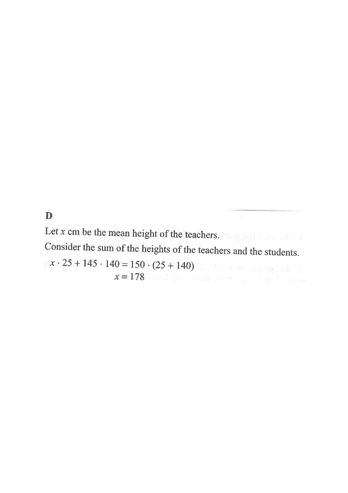

Step 1 — Given data.

Identify the two groups and the combined group:
Teachers: $n_T = 25$,
mean $= x$ (unknown).
Students: $n_S = 140$, mean $= 145$ cm.
Combined: $n = 25+140 = 165$,
mean $= 150$ cm.
Hint: the combined mean is a weighted mean — each group contributes in proportion to its size.
Write the total-sum equation.
Since mean $=\dfrac{\text{sum}}{n}$, we have $\text{sum} = \text{mean}\times n$:
\[ \underbrace{25x}_{\text{teachers' total}} + \underbrace{145\times 140}_{\text{students' total}} = \underbrace{150\times(25+140)}_{\text{combined total}} \]
Hint: conserved quantity — the total of all heights equals the sum of the two group totals.
Evaluate the two known products:
\[ 145\times 140 = 20300, \qquad 150\times 165 = 24750 \]
The equation becomes:
\[ 25x + 20300 = 24750 \]
Hint: $150\times(25+140)=150\times165$;
compute carefully, no calculator needed.
Solve for $x$:
\[ 25x = 24750 - 20300 = 4450 \]
\[ x = \frac{4450}{25} = 178 \]
Hint: $4450 \div 25 = 178$ (since $178\times 25 = 4450$).
Sanity check: the combined mean $150$ lies between $145$ and $178$,
and since students (140) far outnumber teachers (25), the combined mean should be much closer to $145$ than to $178$.
$150$ is only $5$ above $145$,
so a relatively high teacher mean is expected. ✔
Therefore the mean height of the teachers is $178$ cm.
Hint: always check that the combined mean lies between the two group means.
Question. The mean height of \(20\) teachers and \(180\) students is \(152\) cm. If the mean height of the students is \(150\) cm, then the mean height of the teachers is
A. \(154\) cm B. \(160\) cm C. \(170\) cm D. \(172\) cm